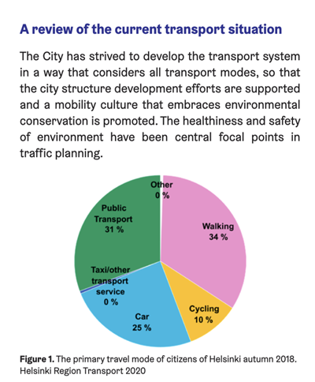

Building Navon: a bicycle navigation app with AI agents
One of the brighter sides of AI is that it has made it much easier to bring small, long-held ideas to life. For me, one of those ideas was a bicycle navigation app as simple as Google Maps but with better routes.
Google Maps was made for cars
Google Maps is mostly designed around driving cars, often reflecting the environment its product designers and engineers know best. But in most cities, especially in Europe, driving is only part of the transportation system. In Helsinki, more than half would walk, walk + public transport, or use a bike for their commutes. And since this time can be enjoyable, if passed through nice environment, they tend to pick the longer and nicer path.

I often prefer a slightly longer ride through Helsinki's Central Park over a shorter route beside car traffic. A good cycling route is not only about distance. It is about noise, air, safety, stress, and whether the ride is actually enjoyable.
The problem is not that Google Maps cannot route bikes. It is that it often seems to optimize for a different cyclist than me: someone who wants the shortest practical route, rather than the nicest and safest one. Garmin and Strava can do better route planning, but they are designed more for serious cyclists with proper gear. HSL, the public transport app in Finland, knows Helsinki very well and suggests good cycling routes, but it does not give turn-by-turn navigation.
A tiny navigator dream
The app I wanted was simple: choose a destination, get a good cycling route from a local or open router, and then navigate it using the native map on the phone, with clear visual and audio cues.
Simplicity was the whole point. Just a "Where to" input that you can type into, paste your Google Maps link, share a destination to the Navon app, then it would suggest routes and you pick one and get navigation.
On the discovery phase, I noticed that there are also other free and open routers, and some are actually pretty good even outside of Helsinki. BRouter.de provides really good routes too. So it seemed that the app could be used in other countries too.
Privacy was another thing I cared about. Of course the app still needs to call HSL or BRouter to calculate routes, unless local routing exists later. But I wanted to keep my own backend unnecessary. If the user provides their own HSL key, the app does not need to call navon.bike/api at all. The backend and the rest of the code are open source, and the app is not built around data collection.
Maybe at some point I invest in making some local routing options for total offline capabilities too, but there are already very well made and open source apps for this. Check out OsmAnd and OrganicMaps.
Building it with AI agents in a box
I started by making a dev container, and in the dev container I had Claude Code and Codex available. These tools can be left more free inside a dev container, without posing too much risk, and another reason was that I was doing it on my free time, so I might be on my gaming PC, my tablet, my phone or my laptop, but I had the dev container hosted at my home server, so I could access it from anywhere. Also I could let things run in a tmux session for longer. Not that I actually found anything that runs over night.
I started mostly with the web code, because I'm most familiar, had clear guides for the UX specs of what I want, and had AI agents implement it in phases. For most part of the early stages of implementation I only checked if the code overall structure made sense. Then very similar code was made for iOS in Swift and Android in Kotlin.
Pipelines and tests were an essential part of this, they kept the specs in order. But yet here and there the AI agent would go and suppress a test or a type just to get green at all costs. More manual work was needed to monitor this even from early stages.
I mostly used Claude Code using DeepSeek models, just because they are cheaper and work similarly.
Sanding the edges
When overall features of the app were ready, I started reviewing the code in more details, restructured, simplified parts and removed slop from it. This went a lot smoother than I thought.
When testing it in the field, I noticed many bugs, almost every set of features had a lot of bugs and rough corners. First I started taking notes, while casually using the app day to day, and then later I put them for the AI agent to make red tests for, then fix them and then get the green out. Then I'd keep reviewing the changes so the bug fixing wouldn't decrement the code quality.
Since navigation and audio cues were all this app did, I spent a bit more time testing it, but then I noticed it's also quite difficult to remember what was wrong. So I added a way to record diagnostics data, plus a diagnostics tool for the web version that shows the recording on a timeline. From there, I could generate useful output for the AI agent to turn into tests and fixes. Maybe later I'd write a bit more about that, I was quite happy with myself when this obvious idea came to me. 😅
Things that still bit back
Though I implement software for a living, still it was quite surprising how much work there is to a project when you start from nothing. Setting up the project, the pipelines, linters, tests, it's just so many things.
iOS is quite annoying to develop, it can't be compiled and tested in a container. I had to make GitHub runners to run on my Mac, and use it to validate changes and to build the app for my phone through that. Also I had to pay actual money to put a FOSS in the store! 👀
AI agents would do these simple applications just fine, but when things get complicated they lack. Still, learned from other projects at work (agentic development using existing code as a source of truth), I instructed AI agents to use OsmAnd source code as a source of truth for some tricky things, like how to get iOS background location smooth. (Thanks to them, all this is possible.)
I've got enough work to do myself, so I didn't want this hobby project keep me at home. Luckily the terminal apps can ssh to my dev container, and run tmux and AI agents inside them just fine, so I was sometimes just explaining something using the voice feature of iOS keyboard when I was out doing other things I like. And maybe once or twice I read the AI-made code at park using a tablet, it's fine, a bit nicer than sitting at my work desk.
Final note
If this sounds interesting, you can try it at navon.bike, find it in the App Store or Google Play, or check out the source code at github.com/pouriaMaleki/navon.
There is another side project to this, which is using an SBC with a display to make a handheld (or handlebar mounted) screen for this, which I'll write something about later.